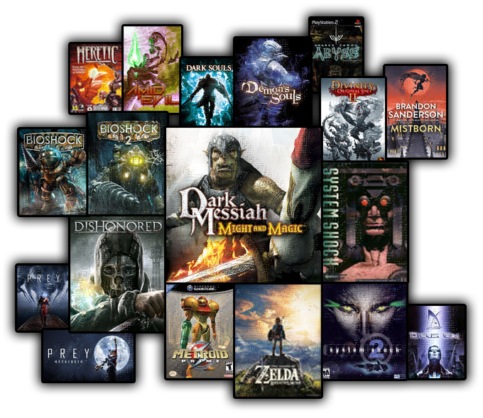

About
- Genre: action-adventure, first-person, immersive sim
- Engine: Unreal Engine 4
- Setting: Sci-Fantasy XVIIth Century, central-west Europe
- Platforms: PC (Steam), GOG and consoles post-release
- Game length planned: 8+ hours
- Inspirations: Dark Messiah of Might and Magic, Bioshock, Zelda:BotW, Brandon Sanderon's Mistborn, Divinity OS 2...
